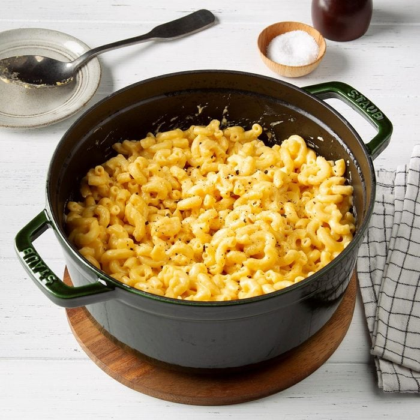

One Pot Mac And Cheese

Description
Who likes cleaning up after making mac and cheese? Not this girl. This one-pot mac and cheese is a family favorite, and my 3-year-old is thrilled to see it coming to the dinner table. We love to add sliced smoked sausage to this creamy mac recipe!
Ingredients
- 3-1/2 cups whole milk
- 3 cups water
- 1 package (16 ounces) elbow macaroni
- 4 ounces Velveeta, cubed
- 2 cups shredded sharp cheddar cheese
- 1/2 teaspoon salt
- 1/2 teaspoon coarsely ground pepper
Preparation
- In a Dutch oven, combine milk, water and macaroni; bring to a boil over medium heat. Reduce heat and simmer until macaroni is tender and almost all the cooking liquid has been absorbed, 12-15 minutes, stirring frequently. Reduce heat to low; stir in cheeses until melted. Season with salt and pepper.